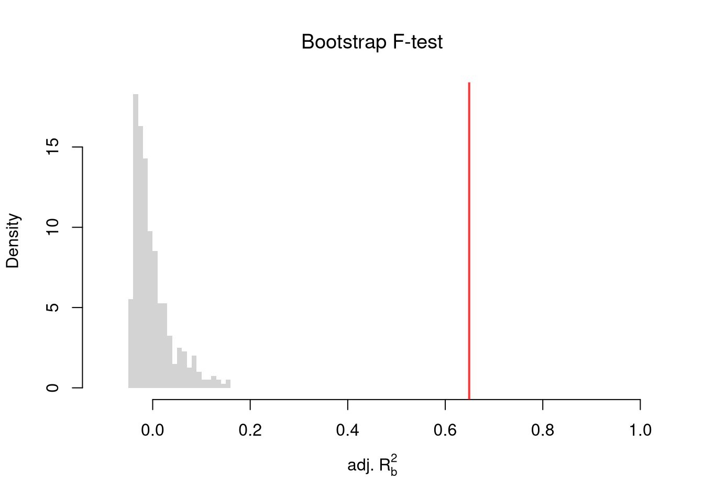

Code
# Check
reg <- lm(Murder ~ Assault+UrbanPop, data=USArrests)
coef(reg)
## (Intercept) Assault UrbanPop
## 3.20715340 0.04390995 -0.04451047We often want to know the relationship between one outcome variable \(\hat{Y}_{i}\) and multiple explanatory/predictor variables. For historical reasons, we start by fitting a linear model to data.
Let there be \(K\) cardinal explanatory variables: \(\hat{X}_{1i}, \hat{X}_{2i},... \hat{X}_{Ki}\). Our model is \[\begin{eqnarray} \hat{Y}_{i} &=& b_0 + b_1 \hat{X}_{i1}+ b_2 \hat{X}_{i2}+\ldots+b_K \hat{X}_{iK} + e_i \\ &=& \sum_{k=0}^{K} b_k \hat{X}_{ik} + e_i, \end{eqnarray}\] where \(\hat{X}_{i0}=1\) and \(e_{i}\) is an error term.
Our objective is to minimize the sum of squared errors: \[\begin{eqnarray} \min_{b_0 ~~ b_1 ~~... ~~ b_{K}} \sum_{i=1}^{n} e_{i}^2, \end{eqnarray}\] hence the common term Ordinary Least Squares regression.
We can analytically solve this problem using matrix-calculations, although we do not do that here (for a detailed derivation, see these notes). Solving yields the best fitting model with coefficients \(B^{*}=(b_0^{*} ~~ b_1^{*} ~~... ~~ b_{K}^{*})\).
# Check
reg <- lm(Murder ~ Assault+UrbanPop, data=USArrests)
coef(reg)
## (Intercept) Assault UrbanPop
## 3.20715340 0.04390995 -0.04451047To measure how well the model fits the data, we can again plot our predictions.
plot(USArrests$Murder, predict(reg), pch=16, col=grey(0, .5),
main=NA, xlab='Observed Murder', ylab='Predicted Murder')
abline(a=0, b=1, lty=2)
We can also again compute sums of squared errors. Adding random data may sometimes improve the fit, however, so we adjust the \(\hat{R}^2\) by the number of covariates \(K\). \[\begin{eqnarray} \hat{R}_{yY}^2 = \frac{\hat{ESS}}{\hat{TSS}}=1-\frac{\hat{RSS}}{\hat{TSS}}\\ \hat{R}^2_{\text{adj.}} = 1-\frac{n-1}{n-K}(1-\hat{R}_{yY}^2) \end{eqnarray}\]
ksims <- 1:30
for(k in ksims){
USArrests[, paste0('R', k)] <- runif(nrow(USArrests), 0, 20)
}
R2_sim <- rep(NA, length(ksims))
R2adj_sim <- rep(NA, length(ksims))
for(k in ksims){
rvars <- c('Assault', 'UrbanPop', paste0('R', 1:k))
rvars2 <- paste0(rvars, collapse='+')
reg_k <- lm( paste0('Murder ~ ', rvars2), data=USArrests)
R2_sim[k] <- summary(reg_k)$r.squared
R2adj_sim[k] <- summary(reg_k)$adj.r.squared
}
plot.new()
plot.window(xlim=c(0, 30), ylim=c(0, 1))
points(ksims, R2_sim)
points(ksims, R2adj_sim, pch=16)
axis(1)
axis(2)
mtext(expression(R^2), 2, line=3)
mtext('Additional Random Covariates', 1, line=3)
legend('topleft', horiz=T,
legend=c('Unadjusted', 'Adjusted'), pch=c(1, 16))
Above, we computed the coefficient \(\hat{B}\) for a particular sample: \(\hat{X}_{1i}, \hat{X}_{2i}, ..., \hat{Y}_{i}\). We now seek to know how much the best-fitting coefficients \(B^{*}\) varies from sample to sample. I.e., \(\hat{B}\) is our estimate and we want to know the standard error of our estimator: \(SE(B^{*})\). To estimate this variability, we can use the same data-driven methods introduced previously.
As before, we can also conduct independent hypothesis tests using t-values. However, we can also conduct joint tests that account for interdependancies in our estimates. For example, to test whether two coefficients both equal \(0\), we bootstrap the joint distribution of coefficients.
# Bootstrap SE's
boot_coefs <- matrix(NA, nrow=399, ncol=3)
for(b in seq(nrow(boot_coefs))){
b_id <- sample( nrow(USArrests), replace=T)
dat_b <- USArrests[b_id, ]
reg_b <- lm(Murder ~ Assault+UrbanPop, data=dat_b)
boot_coefs[b, ] <- coef(reg_b)
}
colnames(boot_coefs) <- names(coef(reg))
# Recenter at 0 to impose the null
#boot_means <- rowMeans(boot_coefs)
#boot_coefs0 <- sweep(boot_coefs, MARGIN=1, STATS=boot_means)boot_coef_df <- as.data.frame(cbind(
ID=seq(nrow(boot_coefs)),
boot_coefs))
fig <- plotly::plot_ly(boot_coef_df,
type = 'scatter', mode = 'markers',
x = ~ UrbanPop, y = ~ Assault,
text = ~ paste('<b> bootstrap dataset: ', ID, '</b>',
'<br>Coef. Urban :', round(UrbanPop, 3),
'<br>Coef. Murder :', round(Assault, 3),
'<br>Coef. Intercept :', round(`(Intercept)`, 3)),
hoverinfo='text',
showlegend=F,
marker=list( color='rgba(0, 0, 0, 0.5)'))
fig <- plotly::layout(fig,
showlegend=F,
title='Joint Distribution of Coefficients (under the null)',
xaxis = list(title='UrbanPop Coefficient'),
yaxis = list(title='Assualt Coefficient'))
figWe can also use an \(F\) test for any \(q\) hypotheses. Specifically, when \(q\) hypotheses restrict a model, the degrees of freedom drop from \(k_{u}\) to \(k_{r}\) and the residual sum of squares \(\hat{RSS}=\sum_{i}(\hat{Y}_{i}-\hat{y}_{i})^2\) typically increases. We compute the statistic \[\begin{eqnarray} \hat{F}_{q} = \frac{(\hat{RSS}_{r}-\hat{RSS}_{u})/(k_{u}-k_{r})}{\hat{RSS}_{u}/(n-k_{u})} \end{eqnarray}\]
If you test whether all \(K\) variables are jointly significant, the restricted model is a simple intercept and \(\hat{RSS}_{r}=\hat{TSS}\), and \(\hat{F}_{q}\) can be written in terms of \(\hat{R}^2\): \(\hat{F}_{K} = \frac{\hat{R}^2}{1-\hat{R}^2} \frac{n-K}{K-1}\). The first fraction is the relative goodness of fit, and the second fraction is an adjustment for degrees of freedom (similar to how we adjusted the \(\hat{R}^2\) term before). We can also write this test statistic for whether all variables are statistically significant in terms of the adjusted \(\hat{R}^2\): \[\begin{eqnarray} \hat{F}_{K} = \frac{(K-1) + (n-K)\hat{R}^2_{\text{adj.}}}{(K-1)(1 - \hat{R}^2_{\text{adj.}})} \end{eqnarray}\] Notice that \(\hat{F}_{K}=1\) when \(\hat{R}^2_{\text{adj.}}=0\), meaning the model does not improve fit beyond what random covariates would achieve. The F-statistic exceeds \(1\) when \(\hat{R}^2_{\text{adj.}}>0\) and falls below \(1\) when \(\hat{R}^2_{\text{adj.}}<0\).
To conduct a hypothesis test, first compute a null distribution by randomly reshuffling the outcomes and recompute the F statistic, and then compare how often random data give something as extreme as your initial statistic. For some intuition on this F test, examine how the adjusted \(\hat{R}^2\) statistic varies with bootstrap samples.
# Bootstrap under the null
boots <- 1:399
R2adj_sim0 <- rep(NA, length(boots))
for(b in boots){
# Generate bootstrap sample
xy_b <- USArrests
b_id <- sample( nrow(USArrests), replace=T)
# Impose the null
xy_b$Murder <- xy_b$Murder[b_id]
# Run regression
reg_b <- lm(Murder ~ Assault+UrbanPop, data=xy_b)
R2adj_sim0[b] <- summary(reg_b)$adj.r.squared
}
hist(R2adj_sim0, xlim=c(-.1, 1), breaks=25, border=NA,
freq=F, main=NA, xlab=expression('adj.'~R[b]^2))
title('Bootstrap F-test', font.main=1)
# Compare to initial statistic
abline(v=summary(reg)$adj.r.squared, lwd=2, col=rgb(1, 0, 0, .8))
Note that hypothesis testing is not to be done routinely, as additional complications arise when testing multiple hypothesis sequentially.
Under some additional assumptions \(F_{q}\) follows an F-distribution. For more about F-testing, see https://online.stat.psu.edu/stat501/lesson/6/6.2 and https://www.econometrics.blog/post/understanding-the-f-statistic/
Notice that we have gotten pretty far without actually trying to meaningfully interpret regression coefficients. That is because the above procedure will always give us number, regardless as to whether the true data generating process is linear or not. So, to be cautious, we have been interpreting the regression outputs while being agnostic as to how the data are generated. We now consider a special situation where we know the data are generated according to a linear process and are only uncertain about the parameter values.
If the data generating process is truly linear then we have a famous result that lets us attach a simple interpretation of OLS coefficients as unbiased estimates of the effect of \(X\). For example, generate a simulated dataset with \(30\) observations and two exogenous variables. Assume the following relationship: \(Y_{i} = \beta_0 + \beta_1 X_{i1} + \beta_2 X_{i2} + \epsilon_{i}\) where the variables and the error term are realizations of the following data generating processes:
N <- 30
B <- c(10, 2, -1)
x1 <- runif(N, 0, 5)
x2 <- rbinom(N, 1, .7)
X <- cbind(1, x1, x2)
e <- rnorm(N, 0, 3)
Y <- X%*%B + e
dat <- data.frame(Y, X)
coef(lm(Y ~ x1+x2, data=dat))
## (Intercept) x1 x2
## 5.374955 2.993613 1.076511Simulate the distribution of coefficients under a correctly specified model. Interpret the average.
N <- 30
B <- c(10, 2, -1)
Coefs <- matrix(NA, nrow=3, ncol=400)
for(sim in 1:400){
x1 <- runif(N, 0, 5)
x2 <- rbinom(N, 1, .7)
X <- cbind(1, x1, x2)
e <- rnorm(N, 0, 3)
Y <- X%*%B + e
dat <- data.frame(Y, x1, x2)
Coefs[, sim] <- coef(lm(Y ~ x1+x2, data=dat))
}
par(mfrow=c(1, 2))
for(i in 2:3){
hist(Coefs[i, ], xlab=bquote(beta[.(i)]), main=NA, border=NA, freq=F)
abline(v=mean(Coefs[i, ]), lwd=2, col=rgb(1, 0, 0, .8))
abline(v=B[i], col=rgb(0, 0, 1, .8), lty=2)
}
Many economic phenomena are nonlinear, even when including potential transforms of \(Y\) and \(X\). Sometimes the linear model may still be a good or even great approximation. But sometimes not, and it is hard to know ex-ante. Examine the distribution of coefficients under this mispecified model and try to interpret the average.
N <- 30
Coefs <- matrix(NA, nrow=3, ncol=600)
for(sim in 1:600){
x2 <- runif(N, 0, 5)
x3 <- rbinom(N, 1, .7)
e <- rnorm(N, 0, 3)
Y <- 10*x3 + 2*log(x2)^x3 + e
dat <- data.frame(Y, x2, x3)
Coefs[, sim] <- coef(lm(Y ~ x2+x3, data=dat))
}
par(mfrow=c(1, 2))
for(i in 2:3){
hist(Coefs[i, ], xlab=bquote(beta[.(i)]), main=NA, border=NA, freq=F)
abline(v=mean(Coefs[i, ]), col=rgb(1, 0, 0, .8), lwd=2)
}
In general, you can interpret your regression coefficients as “adjusted correlations”. There are (many) tests for whether the relationships in your dataset are actually additively separable and linear.
Explain in your own words why \(\hat{R}^2\) can increase when you add a random noise variable to a regression, but \(\hat{R}^2_{\text{adj.}}\) generally does not. What does this imply about using \(\hat{R}^2\) alone to choose between models with different numbers of covariates?
Using the USArrests dataset, regress Murder on Assault, UrbanPop, and Rape. Report the \(\hat{R}^2_{\text{adj.}}\) and the \(F\)-statistic. Then test whether Rape is jointly significant with the other variables by comparing the full model to a restricted model that excludes Rape.
Using lm(), fit the model Murder ~ Assault + UrbanPop on the USArrests data. Write a bootstrap loop (at least 200 replications) to estimate the standard error of the Assault coefficient. Compare your bootstrap standard error to the one reported by summary().